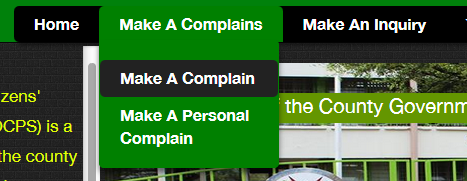
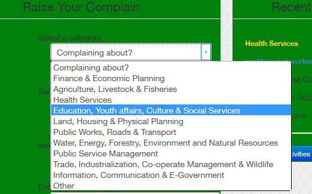
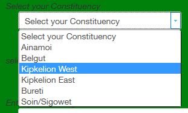
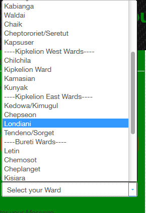
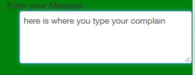
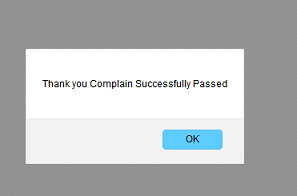
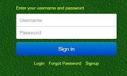
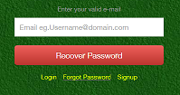
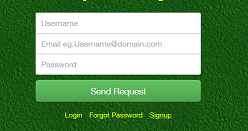

Help Page
The following are the basic step on how to perform operations on the system

Step 1: From the menu bar select an issue that you want to pass for example; a Complain, Suggestion or Inquiry as shown in Figure 1.1 or Figure 1.2


Step2: This will redirect you to an issue form where you can select a Ministry that you want to inquire about as shown in figure 1.3


Step 3: Select the Constituency that you are from as shown in figure 1.4


Step 4: Select the Ward that you are from as shown in figure 1.4


Step 5: Type your Issue at this point be brief and precise figure 1.6 shows the text area that you are to type your question or complain


Step 6: Submit your issue figure 1.7 shows the submit and reset buttons, click the SUBMIT button to send your issue and CANCEL to return to homepage on submission you will get a notification confirming that your issue has been submitted e.g. Figure 2.1

ADVANCED USERS LOGIN



Figures 1.8, 1.9 and 2.0 show the advanced user’s interface that include the login, the password recovery and sign up pages respectively.
For more questions about the system contact us and we will gladly respond in Your Views Section on the Homepage
For more questions about the system contact us and we will gladly respond in Your Views Section on the Homepage